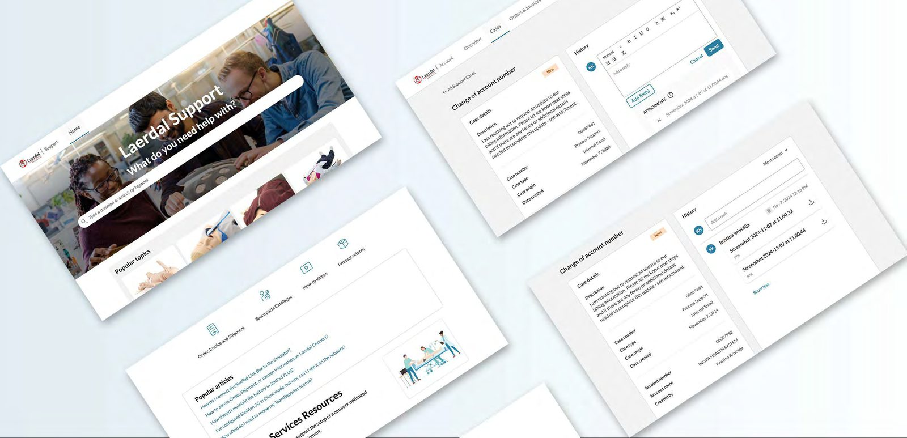

Case-studie · Helse / B2B-support
Ny support- og hjelpeløsning for Laerdal Medical
Laerdals kunder løste færre saker på egen hånd enn de burde, og endte i stedet opp hos kundestøtte. Dette er den selvbetjente løsningen bygget for å tette det gapet, med en frittstående versjon som første steg.

Problem
To frustrasjoner, én rotårsak
Kundene strevde med å løse saker på egen hånd, noe som presset samtalevolumet over på en kundestøtte som ikke burde vært første stopp. To ting drev dette: det var vanskelig å finne relevant innhold, og selve supportmaterialet var tynt: veiledning for oppstart, klarhet rundt beste bruksområder og hjelp til produktvalg manglet alt sammen, forverret av hvor stort produktutvalget hadde blitt.
Problemstillingen var enkel: mangel på rask, selvstendig sakløsning. Kundene ringte kundestøtte fordi de ikke raskt fant svaret selv.
Research
Å forstå økosystemet før skjermene ble designet
Undersøkelsen omfattet brukerintervjuer, en konkurrentanalyse av supportopplevelser andre steder, kartlegging av økosystemet på tvers av Laerdals digitale portaler, en feltreise for å observere reell brukeratferd, og personas og brukerflyter bygget fra det som kom tilbake. Å definere KPI-er hjalp til med å forme strategien uten å bli den eneste rettesnoren. Prioriteringene endret seg etter hvert som undersøkelsen gjorde det, og prosessen ble holdt bevisst fleksibel.
Tilnærming
Fire fokusområder
- Tydelig navigasjon: en informasjonsarkitektur bygget for at kunder raskt skal finne relevante ressurser.
- Helhetlig innhold: strukturerte kategorier som gir kundene full oversikt over hvordan de kan løse en sak.
- Feilsøkingsmulighet: en veiledet, trinnvis prosess for selvstendig løsning, med tydelige stier i stedet for et søkefelt uten retning.
- Effektiv sakskommunikasjon: detaljert informasjonsinnhenting ved sakopprettelse, inkludert vedlegg og kontekst, slik at interne spesialister starter med det de trenger i stedet for å måtte lete det opp.
Resultat
Hva løsningen gjør
Den ombygde Support-siden lar kunder løse saker selvstendig, eller opprette en godt utformet sak gjennom en avledende saksflyt, i stedet for å gå rett til telefonen. Prosjektet er fortsatt i gang: den forrige løsningen fases forsiktig ut, mens brukertesting og tilbakemeldinger fortsetter å forme det som bygges videre.